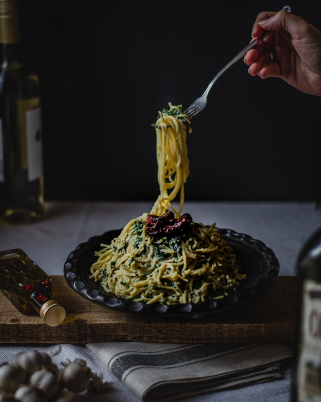

Home
Spaghetti Carbonara

Description
The most iconic late-night Italian comfort food, spaghetti aglio, olio e peperoncino, is simplicity at its most satisfying.
With a gentle heat and an irresistible aroma, it embodies the soul of home-style Italian cooking.
Ingredients
- Spaghetti
- Chili Pepper
- Garlic
- Olive Oil/li>
- Fresh Parsley
Steps
- Bring a large pot of salted water to a rolling boil. Add spaghetti and cook until al dente. Reserve some of the pasta cooking water before draining
- While pasta cooks, thinly slice the garlic and chili peppers
- In a large skillet, gently heat the olive oil over low-medium heat. Add garlic and chili, letting them slowly release their flavor without burning. (If garlic browns too quickly, remove the pan from the heat for a moment)
- Add the drained spaghetti to the skillet. Toss well, adding a splash of the reserved pasta water to help the oil coat the pasta evenly
- Plate up, garnish with chopped parsley if desired, and enjoy this simple yet soulful classic